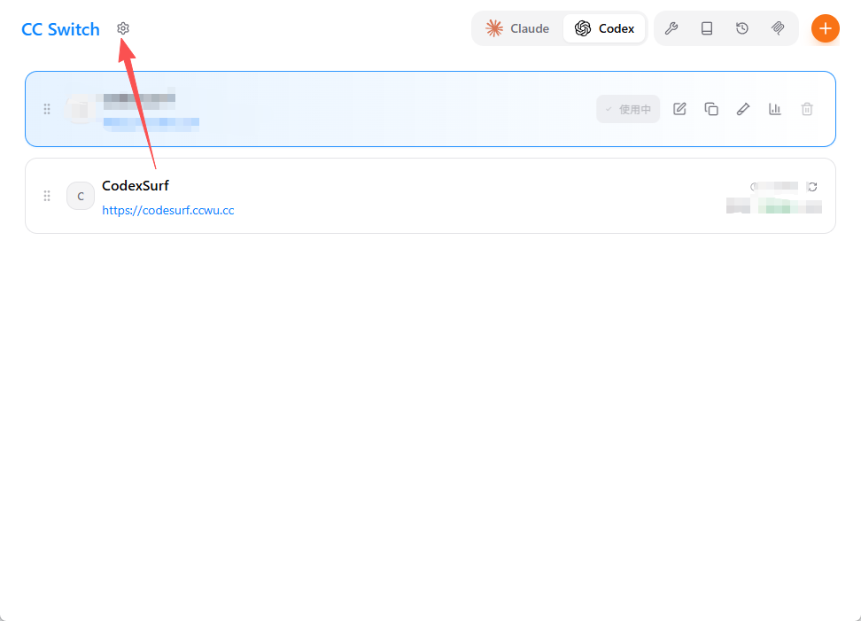
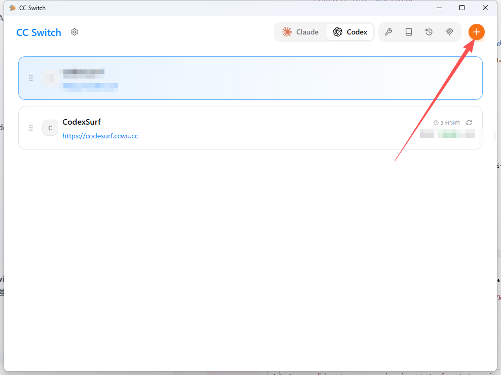
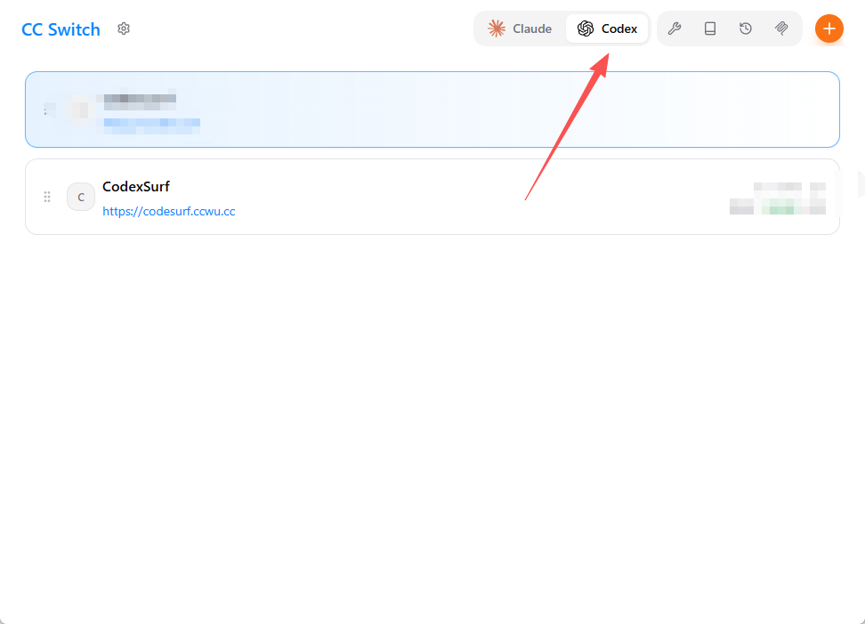
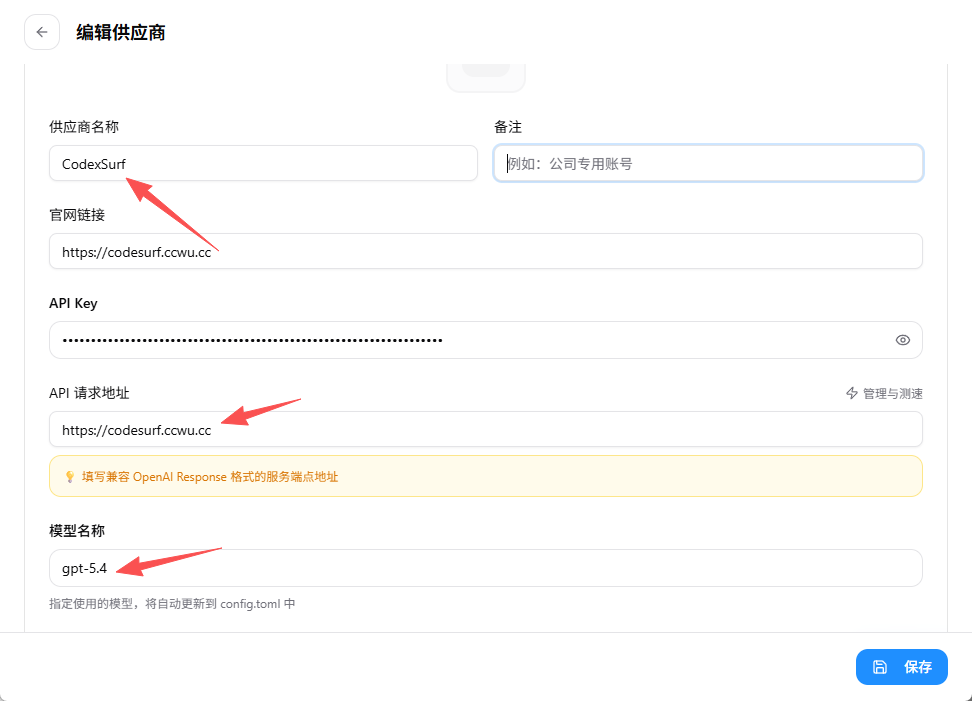

CodexSurf 开发者文档
欢迎来到 CodexSurf 的官方文档中心。这里为您提供了详尽的 API 接入指南，帮助您在几分钟内轻松连接并调用强大的 GPT 模型。
为什么选择 CodexSurf？
CodexSurf 是一家专注于提供 稳定、高性价比的 GPT 模型 API 分发服务平台。我们致力于为个人开发者与企业团队提供卓越的 AI 基础设施体验。
- 极致稳定： 我们拥有可靠的可用性保障，通过智能路由与企业级网关设计，确保您的调用不会中断。
- 原生兼容： 完全兼容 OpenAI 的官方 SDK 格式，无需更改代码逻辑结构，改个 URL 就能无缝迁移。
- 透明消费： 不设隐形消费，所有 Tokens 消耗一目了然，极致性价比。
1. 快速获取 API 密钥
要开始调用我们的 GPT 服务，您需要首先在控制台生成专属的 API 密钥 (Auth Token)。
访问 CodexSurf 控制台 进行以下操作：
- 点击 「API 密钥」-「创建密钥」
- 名称: 随便填写方便自己区分即可
- 令牌分组: 根据实际需要选择（必填项，不能留空）
- 额度建议: 设置为无限额度
- 其他选项保持默认
*注意：生成的 sk-xxxxxx
格式字符串就是您的专属密钥，请妥善保管，切勿泄露给他人。
CodeX 部署指南
CodeX 是 OpenAI 基于 GPT-5 架构推出的代码生成与优化 CLI 工具，为开发者提供强大的编程辅助能力。
前置要求
在开始之前，请确保已完成以下准备：
- Node.js 环境：CodeX 通过 npm 安装，需要 Node.js 环境（见下方安装说明）
- CC-Switch 工具（推荐）：请参考 CC Switch 配置教程 安装 CC-Switch
安装 Node.js
CodeX 需要通过 npm 安装，因此必须先安装 Node.js。
⊞ Windows
方法一：使用官方安装包（推荐）
- 访问 https://nodejs.org
- 下载 LTS 版本的 Windows Installer (.msi)
- 运行安装程序，按默认设置完成安装
- 安装程序会自动添加到 PATH 环境变量
方法二：使用包管理器
使用 Winget（Windows 11 或 Windows 10 自带）：
winget install OpenJS.NodeJS.LTS使用 Chocolatey：
choco install nodejs-lts使用 Scoop：
scoop install nodejs-lts🍎 macOS
方法一：使用 Homebrew（推荐）
如果尚未安装 Homebrew：
/bin/bash -c "$(curl -fsSL https://raw.githubusercontent.com/Homebrew/install/HEAD/install.sh)"使用 Homebrew 安装 Node.js：
brew install node方法二：使用官方安装包
- 访问 https://nodejs.org
- 下载 LTS 版本的 macOS Installer (.pkg)
- 运行安装程序，按默认设置完成安装
🐧 Linux
Ubuntu/Debian：
sudo apt update
curl -fsSL https://deb.nodesource.com/setup_lts.x | sudo -E bash -
sudo apt-get install -y nodejsCentOS/RHEL/Fedora：
sudo dnf install nodejs npm
# 或者
sudo yum install nodejs npmArch Linux：
sudo pacman -S nodejs npm验证安装
node --version
npm --version提示
建议使用 LTS（长期支持）版本以获得最佳稳定性。安装完成后需重启命令行窗口。
获取 CodeX 专用令牌
重要提示
CodeX 和 Claude Code 使用不同的令牌分组，两者不通用！请务必选择 CodeX 对应的令牌分组。
访问 CodexSurf API 控制台 进行以下操作：
- 点击「API 密钥」-「创建密钥」
- 名称：随便填写方便自己区分即可
- 令牌分组：根据实际需要选择（必填项，不能留空）
- 额度建议：设置为无限额度
- 其他选项保持默认
创建成功后，复制令牌备用。
方式一：使用 CC-Switch 快速配置（推荐）
1. 全局安装 CodeX
npm install -g @openai/codex@latest
codex --version2. 使用 CC-Switch 配置
- 启动 CC-Switch，切换到 Codex 标签
- 点击「+」按钮添加新配置
- 填写提供商信息：
- 提供商名称：自定义（如「CodexSurf」）
- Base URL：
https://codesurf.ccwu.cc - API Key：粘贴上一步获取的 CodeX 专用令牌
- Model：
gpt-5-codex
- 保存并启用配置
提示
也可以在 CodexSurf 控制台的令牌管理中，使用一键导入功能将配置自动导入到 CC-Switch。
3. 验证配置
mkdir my-codex-project
cd my-codex-project
codex输入任意问题，如果能正常收到回复，说明配置成功。
方式二：手动命令行配置
Windows 平台
1. 安装 CodeX CLI
npm install -g @openai/codex@latest
codex --version2. 创建配置目录
mkdir %USERPROFILE%\.codex
cd %USERPROFILE%\.codex3. 创建配置文件
在 %USERPROFILE%\.codex\ 目录下创建 config.toml 文件，内容如下：
model_provider = "OpenAI"
model = "gpt-5.4"
review_model = "gpt-5.4"
model_reasoning_effort = "xhigh"
disable_response_storage = true
network_access = "enabled"
windows_wsl_setup_acknowledged = true
model_context_window = 1000000
model_auto_compact_token_limit = 900000
[model_providers.OpenAI]
name = "OpenAI"
base_url = "https://codesurf.ccwu.cc"
wire_api = "responses"
requires_openai_auth = true4. 创建认证文件
在同一目录下创建 auth.json 文件：
重要提示
请将下方的 API Key 替换为您在 获取令牌 步骤中复制的 CodeX 专用令牌！
{
"OPENAI_API_KEY": "此处粘贴您的 CodeX 专用令牌"
}5. 初始化工作空间
mkdir my-codex-project
cd my-codex-project
codexmacOS / Linux 平台
1. 安装 CodeX CLI
npm install -g @openai/codex@latest
codex --version2. 创建配置目录
mkdir -p ~/.codex
cd ~/.codex3. 创建配置文件
在 ~/.codex/ 目录下创建 config.toml 文件，内容如下：
model_provider = "OpenAI"
model = "gpt-5.4"
review_model = "gpt-5.4"
model_reasoning_effort = "xhigh"
disable_response_storage = true
network_access = "enabled"
windows_wsl_setup_acknowledged = true
model_context_window = 1000000
model_auto_compact_token_limit = 900000
[model_providers.OpenAI]
name = "OpenAI"
base_url = "https://codesurf.ccwu.cc"
wire_api = "responses"
requires_openai_auth = true4. 创建认证文件
在同一目录下创建 auth.json 文件：
重要提示
请将下方的 API Key 替换为您在 获取令牌 步骤中复制的 CodeX 专用令牌！
{
"OPENAI_API_KEY": "此处粘贴您的 CodeX 专用令牌"
}5. 初始化工作空间
mkdir my-codex-project
cd my-codex-project
codex常见问题
| 问题 | 解答 |
|---|---|
| CodeX 和 Claude Code 的令牌通用吗？ | 不通用。Claude Code 使用 Claude 令牌组，CodeX 使用 CodeX 专用令牌组，请在 CodexSurf 控制台选择对应的令牌分组。 |
| 配置文件放在哪里？ | Windows：%USERPROFILE%\.codex\；macOS /
Linux：~/.codex/ |
| API 请求失败怎么办？ | 检查 API Key 是否正确，Base URL 是否为
https://codesurf.ccwu.cc，以及网络是否可以正常访问 CodexSurf
|
| 如何切换模型？ | 修改 config.toml 中的 model 字段即可 |
遇到 stream disconnected before completion: stream closed before response.completed 怎么办？ |
优先检查当前 Node.js 和 Codex 是否已经升级到最新版本。如果版本不是最新，先升级版本后再重试；这类流式中断问题很多时候和旧版本兼容性有关。 |
CC Switch 是一款强大的跨平台 API 供应商切换与管理工具，最初为 Claude Code 设计，现已扩展支持 Codex、Gemini CLI、OpenCode 和 OpenClaw 等多个开发工具前端。
下载与安装
步骤 1：下载软件
前往 Github Release 页面下载最新的安装包：https://github.com/farion1231/cc-switch/releases Windows
用户推荐下载
.msi 格式的安装包，以支持自动更新功能。

步骤 2：安装软件
运行下载的安装包进行安装。如果 Windows 弹出“Windows 已保护你的电脑”的 SmartScreen 拦截提示，请点击左侧的**“更多信息”，然后点击右下角的“仍要运行”**即可正常安装。


通用配置步骤
步骤 1：进入设置面板
首次打开软件后，点击左上角的“齿轮”图标，进入 CC Switch 的全局设置页面。

步骤 2：开启插件接管
在设置页面的“通用”选项卡中，找到并开启 “应用到 XXX 插件”（例如应用到 Claude Code 插件）开关，这样当你在 CC Switch 切换供应商时，对应的终端工具配置才会生效。你可以顺便开启“开机自启”。

步骤 3：添加供应商
回到软件主界面，点击右上角的 “+” 加号图标，新建一个 API 供应商配置。

步骤 4：填写 API 信息
如果你只打算在某个单独的应用中使用（比如只用在 Claude Code），那么直接在弹出的供应商编辑窗口中填写。
- 供应商名称：
Codex（可自定义） - 官网链接：
https://codesurf.ccwu.cc/（选填） - API Key： 填入你在控制台获取的令牌
- API 请求地址：
https://codesurf.ccwu.cc/ - 模型名称： 例如
gpt-5.4
步骤 5：使用统一供应商 (推荐)
由于 CC Switch v3.9.0 引入了 统一供应商（Universal Provider） 功能，如果你想一次配置就能在 Claude Code、Codex 和 Gemini CLI 之间无缝切换共享，强烈建议添加“统一供应商”。
- 在添加供应商界面，点击顶部的 “统一供应商” 标签。
- 点击下方的 “+ 添加统一供应商” 按钮。

- 选择预设类型（如 NewAPI 或 自定义网关）。
- 依次填入 名称、API 地址
(
https://codesurf.ccwu.cc/) 和 API Key。
- 往下滚动，你可以勾选你想把这个配置同步应用到哪些 CLI 工具（Claude Code、Codex、Gemini CLI 等）。

- 最后在底部为不同的工具指定默认的模型。比如为 Codex 映射
gpt-5.4模型。全部填完后点击右下角的 “添加” 即可！

针对各应用的特定配置
（如果你在上一步使用了“统一供应商”，对应的配置会自动同步。如果你是单独配置各个应用，请参考以下说明：）
Codex 配置
点击顶部标签的 Codex 图标。填写与上方通用配置相同的 URL 和 API Key。
- 供应商名称：
Codex（可自定义） - 官网链接：
https://codesurf.ccwu.cc/（选填） - API Key： 填入你在控制台获取的令牌
- API 请求地址：
https://codesurf.ccwu.cc/ - 模型名称： 例如
gpt-5.4

OpenCode 配置
点击顶部标签的 OpenCode 图标。添加并保存供应商后，点击卡片即可将其设为当前 Active 状态。
- 供应商名称：
Codex（可自定义） - 官网链接：
https://codesurf.ccwu.cc/（选填） - API Key： 填入你在控制台获取的令牌
- API 请求地址：
https://codesurf.ccwu.cc/ - 模型名称： 例如
gpt-5.4

OpenClaw 配置
点击顶部标签的 OpenClaw 图标。OpenClaw 支持 Env、Tools 和 AgentsDefaults 编辑面板，你可以根据自己的需要进一步微调。 （此处可自行替换配图）
注意事项
- 请确保填写的请求地址结尾**不要带多余的斜杠
/或 **/v1，CC Switch 和底层命令行工具会自动处理路径拼接。 - 每次在 CC Switch 中点击切换供应商后，你需要重启当前正在运行的命令行终端会话，让新的配置生效。
🦞 OpenClaw 配置 CodexSurf 教程
OpenClaw 是一个开源（MIT 许可）的自托管网关，可将 WhatsApp、Telegram、Discord、iMessage 等聊天应用连接到 AI 编码代理，支持多代理路由、工具使用和会话记忆。更多信息请参考 OpenClaw 官网。本教程将指导你如何在 OpenClaw 中安装并配置 CodexSurf API。
快速导航
步骤 1：安装 OpenClaw
前置要求
需要 Node.js 22 或更高版本。验证方式：node --version
🍎 macOS / 🐧 Linux
方法一：官方安装脚本（推荐）
自动检测环境并安装所有依赖：
curl -fsSL https://openclaw.ai/install.sh | bash方法二：npm
npm install -g openclaw@latest方法三：pnpm
pnpm add -g openclaw@latest
pnpm approve-builds -g⊞ Windows
方法一：PowerShell 安装脚本（推荐）
iwr -useb https://openclaw.ai/install.ps1 | iex方法二：npm（CMD / PowerShell 均可）
npm install -g openclaw@latest方法三：pnpm
pnpm add -g openclaw@latest
pnpm approve-builds -g初始化
安装完成后，运行初始化向导：
openclaw onboard --install-daemon提示
更多安装方式（Docker、从源码构建等）请参考 OpenClaw 官方文档。
步骤 2：获取 API 密钥
访问 CodexSurf 控制台，创建一个新的令牌：
- 点击「API 密钥」-「创建密钥」
- 名称：随便填写，方便自己区分即可
- 令牌分组：根据实际需要选择（必填项，不能留空）
- 额度建议：设置为无限额度
创建成功后，复制令牌备用。
步骤 3：配置 OpenClaw
配置文件位置
| 系统 | 路径 |
|---|---|
| macOS / Linux | ~/.openclaw/openclaw.json |
| Windows | %USERPROFILE%\.openclaw\openclaw.json |
注意
如果文件不存在，可以手动创建。首次运行 openclaw doctor 也会自动生成默认配置。
CodexSurf 配置示例
将以下内容复制到openclaw.json中，并替换你生成的令牌
openclaw.json一般情况下的位置：
Windows: C:\Users\<你的用户名>\.openclaw\openclaw.json
macOS/Linux: ~/.openclaw/openclaw.json
{
"provider": {
"openai": {
"options": {
"baseURL": "https://codesurf.ccwu.cc/v1",
"apiKey": "你生成的令牌"
},
"models": {
"gpt-5-codex": {
"name": "GPT-5 Codex",
"limit": {
"context": 400000,
"output": 128000
},
"options": {
"store": false
},
"variants": {
"low": {},
"medium": {},
"high": {}
}
},
"gpt-5.1-codex": {
"name": "GPT-5.1 Codex",
"limit": {
"context": 400000,
"output": 128000
},
"options": {
"store": false
},
"variants": {
"low": {},
"medium": {},
"high": {}
}
},
"gpt-5.1-codex-max": {
"name": "GPT-5.1 Codex Max",
"limit": {
"context": 400000,
"output": 128000
},
"options": {
"store": false
},
"variants": {
"low": {},
"medium": {},
"high": {}
}
},
"gpt-5.1-codex-mini": {
"name": "GPT-5.1 Codex Mini",
"limit": {
"context": 400000,
"output": 128000
},
"options": {
"store": false
},
"variants": {
"low": {},
"medium": {},
"high": {}
}
},
"gpt-5.2": {
"name": "GPT-5.2",
"limit": {
"context": 400000,
"output": 128000
},
"options": {
"store": false
},
"variants": {
"low": {},
"medium": {},
"high": {},
"xhigh": {}
}
},
"gpt-5.4": {
"name": "GPT-5.4",
"limit": {
"context": 1050000,
"output": 128000
},
"options": {
"store": false
},
"variants": {
"low": {},
"medium": {},
"high": {},
"xhigh": {}
}
},
"gpt-5.4-mini": {
"name": "GPT-5.4 Mini",
"limit": {
"context": 400000,
"output": 128000
},
"options": {
"store": false
},
"variants": {
"low": {},
"medium": {},
"high": {},
"xhigh": {}
}
},
"gpt-5.4-nano": {
"name": "GPT-5.4 Nano",
"limit": {
"context": 400000,
"output": 128000
},
"options": {
"store": false
},
"variants": {
"low": {},
"medium": {},
"high": {},
"xhigh": {}
}
},
"gpt-5.3-codex-spark": {
"name": "GPT-5.3 Codex Spark",
"limit": {
"context": 128000,
"output": 32000
},
"options": {
"store": false
},
"variants": {
"low": {},
"medium": {},
"high": {},
"xhigh": {}
}
},
"gpt-5.3-codex": {
"name": "GPT-5.3 Codex",
"limit": {
"context": 400000,
"output": 128000
},
"options": {
"store": false
},
"variants": {
"low": {},
"medium": {},
"high": {},
"xhigh": {}
}
},
"gpt-5.2-codex": {
"name": "GPT-5.2 Codex",
"limit": {
"context": 400000,
"output": 128000
},
"options": {
"store": false
},
"variants": {
"low": {},
"medium": {},
"high": {},
"xhigh": {}
}
},
"codex-mini-latest": {
"name": "Codex Mini",
"limit": {
"context": 200000,
"output": 100000
},
"options": {
"store": false
},
"variants": {
"low": {},
"medium": {},
"high": {}
}
}
}
}
},
"agent": {
"build": {
"options": {
"store": false
}
},
"plan": {
"options": {
"store": false
}
}
},
"$schema": "https://opencode.ai/config.json"
}步骤 4：启动并验证
配置完成后，先运行诊断命令检查配置是否正确：
openclaw doctor确认无误后，重启 gateway 使配置生效：
openclaw gateway restart然后启动 TUI 界面验证配置是否正常：
openclaw tui如果能正常对话，说明配置成功。
步骤 5：对接 QQ（可选）
如果你希望通过 QQ 与 OpenClaw 交互，可以按照以下步骤完成对接。OpenClaw 官方提供了 QQ 机器人接入页面，整个流程非常简单。
5.1 创建 QQ 机器人
- 访问 OpenClaw QQ 机器人接入页面，使用 QQ 账号登录
- 点击页面中的「创建机器人」按钮

5.2 复制机器人凭证
机器人创建成功后，页面会显示以下信息：
- AppID — 机器人的唯一标识
- AppSecret — 机器人的密钥
同时页面会展示 OpenClaw 原生接入流程，包含需要执行的命令。

安全提示
AppSecret 是敏感信息，且不支持明文保存、二次查看。请在创建时立即复制并妥善保管。
5.3 在 OpenClaw 侧完成 QQ 配置
根据页面提示，依次执行以下命令：
# 1. 安装 OpenClaw 社区 QQBot 插件
openclaw plugins install @sliverp/qqbot@latest
# 2. 配置绑定当前 QQ 机器人（token 值从页面复制）
openclaw channels add --channel qqbot --token "你的Token"
# 3. 重启网关使配置生效
openclaw gateway restart5.4 两种安装方式
你可以选择以下任一方式执行上述命令：
方式一：通过 OpenClaw Gateway Dashboard 的聊天界面
直接在 OpenClaw 的 Web 管理界面中，将页面提供的信息和命令发送给 OpenClaw，它会自动执行安装和配置。

方式二：通过已接入的 IM 渠道发送
如果你已经有其他 IM 渠道（如 Telegram、飞书等）连接到 OpenClaw，也可以直接通过该渠道将信息发送给 OpenClaw 完成安装。

5.5 测试验证
配置完成后，即可在 QQ 中测试：
- 在 QQ 中找到你创建的机器人
- 发送一条消息，确认机器人能正常响应
- 支持 Markdown、图片、语音、文件等多媒体消息收发
- 手机端 QQ、桌面端 QQ 均可使用
QQ 对接常见问题
| 问题 | 可能原因 | 解决方案 |
|---|---|---|
| 机器人无响应 | 网关未启动或 token 配置错误 | 运行 openclaw status 检查状态，确认 token 正确 |
| 插件安装失败 | 网络问题或版本不兼容 | 检查网络连接，尝试 openclaw plugins install @sliverp/qqbot@latest
重新安装
|
| 消息发送失败 | QQ 机器人权限不足 | 检查 QQ 开放平台上机器人的权限配置 |
步骤 6：对接飞书（可选）
如果你希望通过飞书与 OpenClaw 交互，可以按照以下步骤完成对接。
6.1 登录飞书开放平台
- 访问 飞书开放平台，使用飞书账号登录
- 需要企业管理员或具备开发者权限的账号
- 进入「开发者后台」
6.2 创建企业自建应用
- 点击「创建企业自建应用」
- 填写应用信息：
- 应用名称（如
OpenClaw 助手） - 应用描述（如
基于 OpenClaw 的 AI 智能助手） - 应用图标（上传一张辨识度高的图标）
- 应用名称（如
- 确认创建
6.3 获取应用凭证
- 进入刚创建的应用，点击左侧菜单「凭证与基础信息」
- 记录以下两个值（后续配置 OpenClaw 时需要）：
- App ID（格式类似
cli_a90f701cf9f99bd8） - App Secret
- App ID（格式类似
安全提示
App Secret 是敏感信息，请妥善保管，不要泄露或提交到代码仓库。
6.4 添加机器人能力
- 在左侧菜单找到「应用能力」→「机器人」
- 点击开启机器人能力
- 可自定义机器人的名称和描述
6.5 配置应用权限
有两种方式，任选其一。
方式一：JSON 批量导入（推荐）
- 在左侧菜单点击「权限管理」
- 找到页面右上角的「批量导入」按钮
- 粘贴以下 JSON 并确认导入：
{
"scopes": {
"tenant": [
"aily:file:read",
"aily:file:write",
"application:application.app_message_stats.overview:readonly",
"application:application:self_manage",
"application:bot.menu:write",
"contact:user.employee_id:readonly",
"corehr:file:download",
"event:ip_list",
"im:chat.access_event.bot_p2p_chat:read",
"im:chat.members:bot_access",
"im:message",
"im:message.group_at_msg:readonly",
"im:message.p2p_msg:readonly",
"im:message:readonly",
"im:message:send_as_bot",
"cardkit:card:write",
"im:resource"
],
"user": [
"aily:file:read",
"aily:file:write",
"im:chat.access_event.bot_p2p_chat:read"
]
}
}- 导入后，检查权限列表，如果有「申请」按钮的权限，点击逐一申请
- 企业自建应用的权限通常会自动通过审批
方式二：手动逐个开通
在「权限管理」中搜索并开通以下权限：
| 权限标识 | 说明 | 必要性 |
|---|---|---|
im:message |
消息基础权限 | 必须 |
im:message.p2p_msg:readonly |
接收用户私聊消息 | 必须 |
im:message.group_at_msg:readonly |
接收群聊中 @机器人 的消息 | 必须 |
im:message:send_as_bot |
以机器人身份发送消息 | 必须 |
im:message:readonly |
获取历史消息 | 必须 |
im:resource |
消息中的资源（图片/文件）读取 | 必须 |
im:chat.access_event.bot_p2p_chat:read |
机器人单聊事件访问 | 必须 |
im:chat.members:bot_access |
获取机器人所在群的成员信息 | 必须 |
cardkit:card:write |
发送交互卡片消息 | 必须 |
application:application.app_message_stats.overview:readonly
|
应用消息统计 | 推荐 |
application:application:self_manage |
应用自管理 | 推荐 |
application:bot.menu:write |
配置机器人菜单 | 推荐 |
contact:user.employee_id:readonly |
读取用户工号 | 推荐 |
aily:file:read |
AI 文件读取 | 推荐 |
aily:file:write |
AI 文件写入 | 推荐 |
corehr:file:download |
核心人事文件下载 | 可选 |
event:ip_list |
事件 IP 白名单 | 可选 |
6.6 配置事件订阅
- 在左侧菜单找到「事件与回调」→「事件配置」
- 订阅方式选择「使用长连接接收事件」（推荐）
- 点击「添加事件」，搜索并添加
im.message.receive_v1（即「接收消息 v2.0」）
为什么推荐长连接模式？
- 不需要公网 IP、域名或内网穿透工具，本地即可调试
- SDK 自动处理加密传输和鉴权，无需手动解密或验签
- 集成成本低，几分钟就能跑通
长连接限制
- 仅支持企业自建应用，商店应用不可用
- 消息必须在 3 秒内处理完成，否则触发超时重推
- 单应用最多 50 个连接
- 多客户端部署时为集群模式（非广播），只有一个客户端收到消息
6.7 创建版本并发布
必须先发布才能使用
飞书自建应用的权限和事件订阅配置，必须创建版本并发布后才会生效。未发布的应用在飞书客户端中搜索不到，也无法正常收发消息。长连接配置也需要应用发布后才能保存，否则会报错。
- 进入飞书开放平台「版本管理与发布」
- 点击「创建版本」，填写版本说明（如
OpenClaw AI 助手 v1.0） - 设置应用的「可用范围」（至少添加自己或一个测试群）
- 点击「保存」→「申请发布」
- 等待企业管理员审核通过（企业自建应用通常审核较快）
注意
每次权限变更或事件订阅修改后，都需要创建新版本并重新发布，否则变更不会生效。建议在所有配置完成后统一发布，减少反复提审。
6.8 在 OpenClaw 侧完成飞书配置
飞书应用发布成功后，再配置 OpenClaw 侧并启动网关：
# 1. 安装飞书插件
openclaw plugins install feishu-openclaw
# 2. 启用飞书通道并配置凭证
openclaw config set channels.feishu.enabled true --json
openclaw config set channels.feishu.appId "你的AppID"
openclaw config set channels.feishu.appSecret "你的AppSecret"
# 3. 重启网关使配置生效
openclaw gateway restart
# 4. 验证状态
openclaw status
# 预期输出：Feishu | ON | OK | configured配置顺序很重要
正确顺序：先在飞书开放平台完成所有配置并发布应用 → 再配置 OpenClaw 并启动网关。飞书在建立 WebSocket 长连接时会验证应用凭证和发布状态，如果应用未发布或网关未启动，长连接将无法建立。
6.9 测试验证
发布审核通过且 OpenClaw 网关启动后，即可开始测试：
- 在飞书客户端搜索你的机器人名称，或将其添加到一个测试群
- 私聊机器人发送一条消息，确认能正常响应
- 在群聊中 @机器人 发送消息，确认群聊场景也正常
- 测试图片、文件等富媒体消息的收发（如果需要）
飞书对接常见问题
| 问题 | 可能原因 | 解决方案 |
|---|---|---|
| 机器人无响应 | 网关未启动或凭证错误 | 运行 openclaw status 检查状态，确认 App ID / Secret 正确 |
| 群聊收不到消息 | 缺少 im:message.group_at_msg:readonly 权限 |
在权限管理中补充开通，重新发布版本 |
| 消息超时重复推送 | 处理时间超过 3 秒 | 优化处理逻辑，或检查 LLM API 响应速度 |
| 权限变更不生效 | 未重新发布应用版本 | 创建新版本并申请发布 |
| 长连接建立失败 | 应用未发布或网关未启动 | 确认飞书应用已发布且审核通过，然后确认 OpenClaw 网关已启动（openclaw status） |
附录：配置字段说明
| 字段 | 说明 | 是否必填 |
|---|---|---|
agents.defaults.model.primary |
默认使用的模型，格式：provider/model-id |
是 |
agents.defaults.maxConcurrent |
最大并发 agent 数 | 否（默认 4） |
agents.defaults.subagents.maxConcurrent |
最大并发子 agent 数 | 否（默认 8） |
agents.defaults.compaction.mode |
上下文压缩模式 | 否（默认 safeguard） |
models.mode |
模型合并模式 | 否（默认 merge） |
models.providers.<name>.baseUrl |
API 服务地址 | 是 |
models.providers.<name>.apiKey |
API 密钥 | 是 |
models.providers.<name>.api |
API 协议类型 | 是 |
models.providers.<name>.headers |
自定义请求头 | 是 |
models.providers.<name>.models |
可用模型列表 | 是 |
gateway.mode |
gateway 运行模式 | 否（默认 local） |
gateway.auth.mode |
gateway 鉴权模式 | 否 |
gateway.auth.token |
gateway 鉴权 token | 否 |